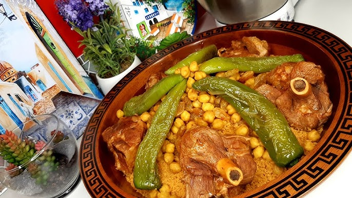

Home
Tunisian Couscous

Description
Tunisian couscous typically consists of steamed semolina granules (the couscous) topped with a hearty stew made
from various ingredients
Ingredients
Couscous:
- 2 cups of couscous grains
- 2 tablespoons of olive oil
- 2 cups of water or broth
- Salt to taste
Stew:
- 1 pound of lamb, chicken, or beef (cut into pieces)
- 2 tablespoons of olive oil
- 1 large onion (chopped)
- 3-4 cloves of garlic (minced)
- 3-4 medium carrots (cut into chunks)
- 2-3 potatoes (cut into chunks)
- 2 zucchinis (sliced)
- 2-3 ripe tomatoes (chopped)
- 1 cup of cooked chickpeas
- 1-2 tablespoons of harissa (adjust to taste)
- 1 teaspoon of ground cumin
- 1 teaspoon of ground coriander
- 1 teaspoon of turmeric
- Salt and pepper to taste
- 4 cups of water or broth
Steps
- Heat 2 tablespoons of olive oil in a large pot over medium heat. Add the chopped onion and minced garlic,
and sauté until the onion is translucent.
- Add the meat (lamb, chicken, or beef) to the pot and brown on all sides.
- Stir in the harissa, ground cumin, ground coriander, turmeric, salt, and pepper. Cook for a couple of
minutes to release the spices' flavors.
- Add the chopped tomatoes, carrots, potatoes, and zucchini to the pot. Pour in the water or broth, and bring
to a boil.
- Reduce the heat, cover, and let the stew simmer for about 45 minutes, or until the meat and vegetables are
tender.
- Meanwhile, prepare the couscous. Place the couscous grains in a large bowl and drizzle with 2 tablespoons of
olive oil. Mix well to coat the grains.
- Bring 2 cups of water or broth to a boil. Pour the boiling liquid over the couscous, cover the bowl, and let
it sit for about 5 minutes, or until the liquid is absorbed.
- Fluff the couscous with a fork to separate the grains. Season with salt to taste.
- Once the stew is ready, add the cooked chickpeas and let them heat through for a few minutes.
- To serve, place the couscous on a large platter. Create a well in the center and ladle the stew over the
couscous. Garnish with chopped fresh herbs and serve with extra harissa on the side.
If you like these recipes? Please Star the repo on GitHub
Learn to code with The Odin Project